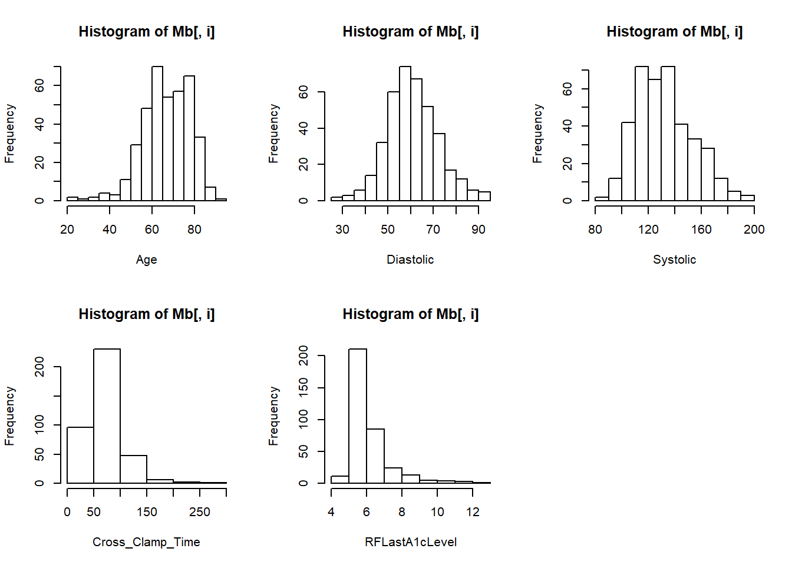

2.1 Lesson 1
2020-02-03
Exercises Solutions (just copied teacher’s solutions)
- Open the database Anesthesia-BD.csv
## 'data.frame': 387 obs. of 9 variables:
## $ Subject : Factor w/ 387 levels "Sbj001","Sbj002",..: 1 2 3 4 5 6 7 8 9 10 ...
## $ Gender : Factor w/ 2 levels "Female","Male": 2 2 1 2 2 2 2 2 2 1 ...
## $ Age : int 50 67 71 51 69 78 70 58 80 63 ...
## $ TypeSurgery : Factor w/ 3 levels "CAB","CAB + Valve",..: 3 1 1 3 1 2 1 3 3 2 ...
## $ SurgStatus : Factor w/ 2 levels "Elective","Urgent": 1 1 2 1 2 2 1 2 1 2 ...
## $ Diastolic : num 45.5 52.6 56.7 71.4 58.1 ...
## $ Systolic : num 112.1 109 98.2 150.8 131.5 ...
## $ Cross_Clamp_Time: int 83 67 83 51 63 114 94 138 42 172 ...
## $ AdvEvent : int 0 0 0 0 1 0 0 0 0 0 ...Factor variable AdvEvent
- For the columns which contain numeric values, create a new summary table in which the rows are the mean, the standard deviation, and the median of each of the numeric columns.
T <- sapply(data[,sapply(data,is.numeric)],function(x){
return(rbind(mean(x,na.rm = T),sd(x,na.rm = T),median(x,na.rm = T)))
}
)
rownames(T) = c("Mean","SD","Median")
T## Age Diastolic Systolic Cross_Clamp_Time
## Mean 67.27390 60.93076 132.04705 72.00521
## SD 11.25574 11.35387 21.22864 32.04680
## Median 67.00000 60.52591 130.00410 67.00000- Considering only the subjects who had CAB or Valve surgery, how many had adverse events? How many males and females in the two groups (having or not having adverse events)? (count and percentage)
# create an index with the observation that comply with the conditions
ind = which(data$TypeSurgery=="CAB" | data$TypeSurgery=="Valve" )
# table these data counts
table(data[ind,"AdvEvent"])##
## No Yes
## 231 80##
## No Yes
## 0.7427653 0.2572347##
## No Yes
## Female 60 21
## Male 171 59##
## No Yes
## Female 0.19292605 0.06752412
## Male 0.54983923 0.189710614.Merge the two datasets (Anesthesia-BD.csv and Anesthesia-BD2.csv) by the subject identification number.
data2 = read.csv("2.UploadedData/Anesthesia-BD2.csv") ###load data Anesthesia-BD2.csv
# I had to rename the first column, I don't know why
names(data2)[1]<-"SubjectID"
str(data2)## 'data.frame': 363 obs. of 7 variables:
## $ SubjectID : Factor w/ 363 levels "Sbj001","Sbj002",..: 3 25 30 32 36 39 46 56 60 63 ...
## $ Diabetes : int 0 0 1 1 0 0 0 1 0 0 ...
## $ RFLastA1cLevel : num 5.7 5.6 7.1 6.7 6.7 6.3 6 6.5 5.3 4.9 ...
## $ ChronicLungDisease: Factor w/ 4 levels "Mild","Moderate",..: 1 1 1 1 1 1 1 1 1 1 ...
## $ Hypertension : int 1 1 1 1 1 1 1 1 1 1 ...
## $ CHF : int 0 1 1 1 1 1 1 0 1 1 ...
## $ Euroscore : Factor w/ 330 levels "#N/A","0.501743134",..: 8 64 4 92 249 36 195 125 214 224 ...- The merge must be such that only the common subjects should be present in the final database (natural join).
## [1] 363 15- The merge must be such that if some subject is not in one of the databases, the subject should be in the database, and missing information must be not available (full outer join).
## [1] 387 15Consider the following statement: “For people without diabetes, the normal range for the hemoglobin A1c level is between 4% and 5.6%. Hemoglobin A1c levels between 5.7% and 6.4% mean you have a higher chance of getting diabetes. Levels of 6.5% or higher mean you have diabetes.”
- Create a new variable with three factors (normal, prediabetes, and diabetes), taking into consideration the values the A1c levels. Compare the results obtained with the variable Diabetes (assuming that 1 means to have diabetes and 0 no diabetes).
diab <- ifelse(Mb$RFLastA1cLevel<5.7,0,ifelse(Mb$RFLastA1cLevel<6.4,1,2))
Mb$Diabetes2 <- factor(x = diab,
levels = 0:2,
labels =c("Normal","PreDiabetes","Diabetes"))
Mb$Diabetes <- factor(Mb$Diabetes,
levels=0:1,
labels=c("Normal","Diabetes"))
table(Mb$Diabetes,Mb$Diabetes2)##
## Normal PreDiabetes Diabetes
## Normal 120 99 11
## Diabetes 7 35 83- Create a table with the comparison between the groups having or not having adverse events for all the variables available in the combined database. Use the appropriate measures for each type of variable.
## 'data.frame': 387 obs. of 16 variables:
## $ Subject : Factor w/ 387 levels "Sbj001","Sbj002",..: 1 2 3 4 5 6 7 8 9 10 ...
## $ Gender : Factor w/ 2 levels "Female","Male": 2 2 1 2 2 2 2 2 2 1 ...
## $ Age : int 50 67 71 51 69 78 70 58 80 63 ...
## $ TypeSurgery : Factor w/ 3 levels "CAB","CAB + Valve",..: 3 1 1 3 1 2 1 3 3 2 ...
## $ SurgStatus : Factor w/ 2 levels "Elective","Urgent": 1 1 2 1 2 2 1 2 1 2 ...
## $ Diastolic : num 45.5 52.6 56.7 71.4 58.1 ...
## $ Systolic : num 112.1 109 98.2 150.8 131.5 ...
## $ Cross_Clamp_Time : int 83 67 83 51 63 114 94 138 42 172 ...
## $ AdvEvent : Factor w/ 2 levels "No","Yes": 1 1 1 1 2 1 1 1 1 1 ...
## $ Diabetes : Factor w/ 2 levels "Normal","Diabetes": 2 1 1 1 1 1 1 1 1 2 ...
## $ RFLastA1cLevel : num 7.9 5.5 5.7 6 5.8 NA 5.9 6 5.2 11.2 ...
## $ ChronicLungDisease: Factor w/ 4 levels "Mild","Moderate",..: 3 3 1 3 3 3 3 3 3 3 ...
## $ Hypertension : int 1 1 1 0 1 0 1 1 1 0 ...
## $ CHF : int 1 0 0 0 0 1 1 1 1 1 ...
## $ Euroscore : Factor w/ 330 levels "#N/A","0.501743134",..: 47 206 8 289 159 96 119 98 77 4 ...
## $ Diabetes2 : Factor w/ 3 levels "Normal","PreDiabetes",..: 3 1 2 2 2 NA 2 2 1 3 ...Mb$Hypertension <- factor(Mb$Hypertension,
levels=0:1,
labels=c("No","Yes"))
Mb$CHF <- factor(Mb$CHF,
levels=0:1,
labels=c("No","Yes"))
Mb$Subject <- as.character(Mb$Subject)
#windows()
par(mfrow=c(2,3))
for (i in which(sapply(Mb,is.numeric))){
hist(Mb[,i],xlab=colnames(Mb)[i])
}
par(mfrow=c(1,1))
table <- by(Mb[,which(sapply(Mb,is.numeric))],
INDICES = Mb$AdvEvent,
FUN = function(x) apply(x,2,quantile,na.rm=T))
table## Mb$AdvEvent: No
## Age Diastolic Systolic Cross_Clamp_Time RFLastA1cLevel
## 0% 25 26.42047 88.70903 15 4.7
## 25% 59 53.30694 115.03977 51 5.6
## 50% 67 60.75382 129.50300 68 5.8
## 75% 76 68.64874 143.12238 83 6.4
## 100% 92 94.35495 180.95547 241 12.2
## --------------------------------------------------------
## Mb$AdvEvent: Yes
## Age Diastolic Systolic Cross_Clamp_Time RFLastA1cLevel
## 0% 24 39.42266 92.34727 13.0 4.600
## 25% 62 52.93295 119.55877 48.0 5.500
## 50% 69 59.94571 131.48461 64.0 5.800
## 75% 77 65.97349 153.50990 88.5 6.425
## 100% 88 92.51766 193.75080 298.0 11.700table$pvalue <- apply(Mb[,which(sapply(Mb,is.numeric))],2,
function(x)
wilcox.test(x[which(Mb$AdvEvent=="No")],x[which(Mb$AdvEvent=="Yes")])$p.value)
table## Age Diastolic Systolic Cross_Clamp_Time RFLastA1cLevel
## 0% 25 26.42047 88.70903 15 4.7
## 25% 59 53.30694 115.03977 51 5.6
## 50% 67 60.75382 129.50300 68 5.8
## 75% 76 68.64874 143.12238 83 6.4
## 100% 92 94.35495 180.95547 241 12.2
## --------------------------------------------------------
## Age Diastolic Systolic Cross_Clamp_Time RFLastA1cLevel
## 0% 24 39.42266 92.34727 13.0 4.600
## 25% 62 52.93295 119.55877 48.0 5.500
## 50% 69 59.94571 131.48461 64.0 5.800
## 75% 77 65.97349 153.50990 88.5 6.425
## 100% 88 92.51766 193.75080 298.0 11.700
## --------------------------------------------------------
## Age Diastolic Systolic Cross_Clamp_Time
## 0.09297764 0.41375034 0.09079886 0.76575185
## RFLastA1cLevel
## 0.78804579Mb$Euroscore<-as.character(Mb$Euroscore)
table2 <- by(Mb[,which(sapply(Mb,is.factor))],
INDICES = Mb$AdvEvent,
FUN = function(x){sapply(x,table)})
table2## Mb$AdvEvent: No
## $Gender
##
## Female Male
## 78 200
##
## $TypeSurgery
##
## CAB CAB + Valve Valve
## 156 47 75
##
## $SurgStatus
##
## Elective Urgent
## 148 130
##
## $AdvEvent
##
## No Yes
## 278 0
##
## $Diabetes
##
## Normal Diabetes
## 170 93
##
## $ChronicLungDisease
##
## Mild Moderate No Severe
## 34 4 226 1
##
## $Hypertension
##
## No Yes
## 49 215
##
## $CHF
##
## No Yes
## 186 79
##
## $Diabetes2
##
## Normal PreDiabetes Diabetes
## 91 100 70
##
## --------------------------------------------------------
## Mb$AdvEvent: Yes
## $Gender
##
## Female Male
## 31 78
##
## $TypeSurgery
##
## CAB CAB + Valve Valve
## 41 29 39
##
## $SurgStatus
##
## Elective Urgent
## 64 45
##
## $AdvEvent
##
## No Yes
## 0 109
##
## $Diabetes
##
## Normal Diabetes
## 65 33
##
## $ChronicLungDisease
##
## Mild Moderate No Severe
## 16 0 79 3
##
## $Hypertension
##
## No Yes
## 20 78
##
## $CHF
##
## No Yes
## 50 47
##
## $Diabetes2
##
## Normal PreDiabetes Diabetes
## 36 35 25